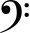
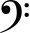
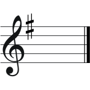
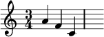

在吉他這塊領域，除了科班出身常看的五線譜、以及以及訪間教學常用的TAB(六線)譜以外，
我們可能還會看到和弦譜，以及給主唱標示melody、標在吉他譜下方的簡譜。
五線譜
在五線譜中，開頭一般會有譜號、調號、拍號、速度等等資訊：
譜號：有高音譜記號
、中音譜記號
 ，和低音譜記號

，和低音譜記號

調號：利用升降記號來代表這個譜的調式，放在何處就是升降該音
例如，就是G大調 / E小調
拍號：標示往後小傑的節奏
分母表示拍子的時值也就是說用幾分音符來當一拍，
分子代表每一小節有多少拍子
例如3/4代表一小節有3拍，每拍為4分音符 
要特別注意的是，雖然五線譜會標出譜號，但是五線譜中的音符都是用音名標記，並沒有位移。
TAB譜
TAB譜是訪間常用的記譜法，好處是方便易懂、直覺而好學，而且能夠配合和弦指形等來幫助識譜，
然而缺點是指型皆是固定的，若要更改就要回到吉他上找因過後轉換成其他譜式再轉換回TAB譜。
部分圖片參照：維基百科
˄